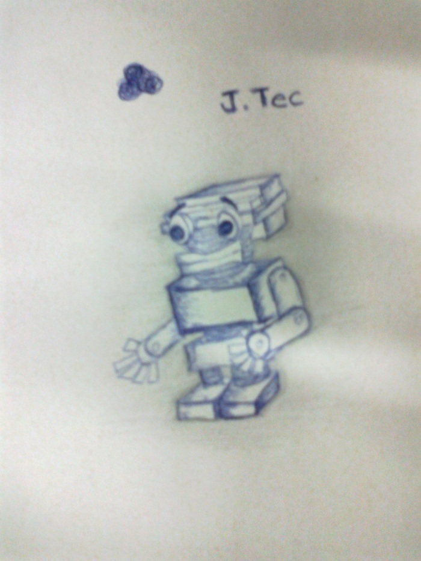
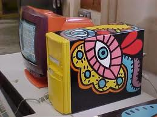

A pergunta de Marcos Egito, no post sobre Robótica Livre pode ser usada (não só) para questionar o objeto em si, mas as interaçãoes sociais.

Marcos está trabalhando com crianças e acredita que as oficinas de robótica conseguem:
Passar conceitos da robótica livre(...), criando, trazendo a criação de um artefato, para o entendimento de outras ciência.
Às vésperas da semana de Ciência e Tecnologia, muito se fala em desenvolvimento, futuro, progresso. Mas tanto as propostas de redes livres, quanto os estudos para soluções do que deixamos para trás, o Lixo Eletrônico, como essa compartilhada por Marcelo Braz, ainda são raras. Hudson trouxe o link da Primeira Reunião de Recicladores de Eletroeletrônicos, que acontecerá amanhã, em São Paulo-SP.
Orlando relembrou na lista, a pintura de monitores, amplamente realizada por Glauco Paiva nos primeiros anos de MetaReciclagem...
leia mais >>